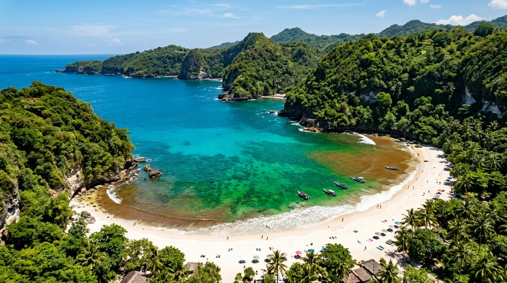
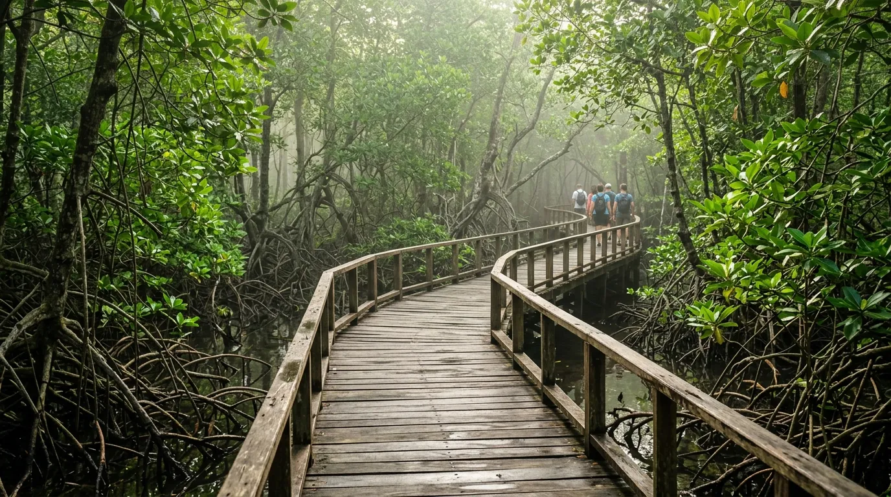

- Apa Itu Pantai Tiga Warna?
- Lokasi dan Rute Menuju Pantai Tiga Warna
- Cara Reservasi Pantai Tiga Warna
- Harga Tiket dan Biaya Lainnya
- Snorkeling Tiga Warna: Aktivitas Utama yang Wajib Dicoba
- Aturan Kawasan Konservasi yang Wajib Dipatuhi
- Tips Liburan ke Pantai Tiga Warna
- FAQ Seputar Pantai Tiga Warna Malang
Kalau kamu sedang mencari destinasi pantai yang beda dari biasanya, Pantai Tiga Warna wajib masuk daftar liburanmu. Terletak di Kabupaten Malang, Jawa Timur, pantai ini terkenal karena gradasi warna air lautnya yang unik — biru, hijau, dan cokelat — sekaligus menjadi salah satu pantai konservasi Malang yang paling ketat menjaga kelestarian alamnya. Bukan cuma soal pemandangan, tempat ini juga jadi favorit untuk snorkeling Tiga Warna karena airnya jernih dan biota lautnya masih terjaga.
Artikel ini akan membahas tuntas semua yang perlu kamu tahu sebelum berangkat: lokasi, cara reservasi, harga tiket, aturan kawasan konservasi, aktivitas seru, sampai tips supaya liburanmu lancar.
Pantai Tiga Warna terkenal dengan gradasi warna air lautnya yang unik — biru, hijau, dan cokelat — sekaligus menjadi salah satu pantai konservasi Malang yang paling ketat menjaga kelestarian alamnya.
Apa Itu Pantai Tiga Warna?
Pantai Tiga Warna berada di Desa Tambakrejo, Kecamatan Sumbermanjing Wetan, Kabupaten Malang — sekitar 68-71 km dari pusat Kota Malang. Pantai ini terkenal dengan gradasi warna air lautnya yang unik berpadu indah dengan panorama memesona. Pantai ini memiliki tiga gradasi warna air laut, yaitu biru, hijau, dan cokelat kemerahan.
Perbedaan warna tersebut dipengaruhi oleh kedalaman air laut: warna biru menandakan area yang paling dalam, hijau muncul pada bagian yang lebih dangkal, sementara warna cokelat berasal dari hamparan pasir pantai yang terlihat jelas di tepian.
Yang membuat pantai ini istimewa adalah statusnya sebagai kawasan konservasi. Pantai ini merupakan kawasan daerah rehabilitasi dan konservasi mangrove, hutan lindung, dan terumbu karang, sehingga pengelolaannya jauh lebih ketat dibanding pantai wisata biasa. Karena itu pula, Pantai Tiga Warna sering disebut sebagai salah satu pantai konservasi Malang paling representatif di Jawa Timur.
Lokasi dan Rute Menuju Pantai Tiga Warna
Pantai Tiga Warna berlokasi di Jl. Sendang Biru, Tambakrejo, Kecamatan Sumbermanjing Wetan, Kabupaten Malang, Jawa Timur, tak jauh dari kawasan Pantai Sendang Biru dan berseberangan dengan Pulau Sempu.
Rute yang bisa kamu ikuti dari pusat Kota Malang:
- Ambil arah selatan menuju Kecamatan Bululawang – Turen – Sumbermanjing Wetan.
- Ikuti papan petunjuk arah menuju Pantai Sendang Biru.
- Setelah tiba di area Sendang Biru, lanjutkan ke pos masuk kawasan Clungup Mangrove Conservation (CMC), tempat perjalanan menuju Pantai Tiga Warna dimulai.
- Dari pos masuk, kamu perlu berjalan kaki melewati jalur hutan mangrove hingga mencapai pos 2, tempat loket tiket berada.
Perjalanan darat dari Kota Malang memakan waktu sekitar 2,5–3 jam tergantung kondisi lalu lintas, ditambah trekking ringan sekitar 30-45 menit melewati hutan mangrove yang teduh dan asri.

Cara Reservasi Pantai Tiga Warna
Karena berstatus kawasan konservasi ketat, Pantai Tiga Warna wajib direservasi terlebih dahulu sebelum kunjungan — kamu tidak bisa datang langsung tanpa booking. Setiap harinya pengunjung dibatasi hanya 100 orang dengan maksimal berada di lokasi selama 2 jam agar bisa lebih menjaga lingkungan dan kelestarian biota laut.
Beberapa poin penting soal reservasi:
- Format booking umumnya: nama_tanggal kedatangan_nomor HP_jam kedatangan_jumlah peserta.
- Reservasi weekday dilakukan seminggu sebelumnya, sedangkan untuk weekend dilakukan sebulan sebelumnya.
- Setiap pengunjung tidak boleh datang sendirian dan wajib didampingi oleh seorang pemandu.
- Pantai Tiga Warna tutup setiap hari Kamis — hari itu digunakan untuk kerja bakti konservasi oleh pengelola.
Karena kuota harian terbatas dan sistem reservasinya cukup ketat, sebaiknya kamu mengecek akun resmi pengelola atau menghubungi jauh-jauh hari, terutama jika berencana datang di akhir pekan atau musim liburan.
Harga Tiket dan Biaya Lainnya
Berikut rincian biaya yang perlu kamu siapkan:
Perlu diingat, harga-harga ini bisa berubah sewaktu-waktu mengikuti kebijakan pengelola setempat, jadi sebaiknya kamu konfirmasi ulang saat melakukan reservasi.
Snorkeling Tiga Warna: Aktivitas Utama yang Wajib Dicoba
Salah satu alasan utama wisatawan datang jauh-jauh ke sini adalah pengalaman snorkeling Tiga Warna yang menawarkan pemandangan bawah laut memukau. Pantai ini mempunyai ombak yang lumayan tenang sehingga cocok untuk snorkeling, dan kamu bisa langsung merasakan keindahan terumbu karang serta melihat berbagai macam jenis ikan.
Selain melihat biota laut seperti ikan dan terumbu karang, kamu juga mungkin akan menjumpai ubur-ubur, jadi tetap perlu berhati-hati saat berenang di dekatnya.
Selain snorkeling, ada beberapa aktivitas lain yang bisa kamu nikmati:
- Kano — menyusuri perairan tenang dengan single atau long canoe.
- Banana boat — berkeliling pantai dengan cara yang mengasyikkan bersama teman atau pengunjung lain.
- Tur hutan mangrove — menyewa perahu kecil untuk menjelajahi ekosistem mangrove di sekitar kawasan.
- Camping — meski area camping ground hanya tersedia di kawasan Pantai Gatra, bukan langsung di Tiga Warna.
Aturan Kawasan Konservasi yang Wajib Dipatuhi
Sebagai salah satu pantai konservasi Malang paling dijaga, ada sejumlah aturan ketat yang berlaku demi kelestarian lingkungan:
- Wajib reservasi sebelum berkunjung — tidak ada kunjungan dadakan.
- Barang bawaan akan diperiksa terlebih dahulu, terutama barang yang berpotensi membahayakan lingkungan, dan pemeriksaan juga dilakukan saat keluar kawasan.
- Waktu kunjungan dibatasi maksimal 2 jam di area pantai, dan biasanya pemandu akan mengingatkan saat waktu hampir habis.
- Dilarang membawa pulang biota laut, karang, atau pasir sebagai suvenir.
- Dilarang membuang sampah sembarangan — bawa kembali sampahmu sendiri.
- Sunscreen yang digunakan sebaiknya jenis reef-safe agar tidak merusak terumbu karang.
Aturan-aturan ini mungkin terasa ketat dibanding pantai wisata pada umumnya, tapi justru inilah yang membuat air lautnya tetap jernih dan ekosistemnya tetap lestari hingga sekarang.
Tips Liburan ke Pantai Tiga Warna
- Reservasi jauh-jauh hari, apalagi jika kamu berencana datang di akhir pekan atau musim liburan sekolah.
- Datang pagi hari supaya punya waktu maksimal menikmati 2 jam kunjungan dan mendapat cahaya matahari terbaik untuk foto.
- Bawa alas kaki yang nyaman untuk trekking melewati hutan mangrove.
- Siapkan uang tunai secukupnya karena fasilitas ATM atau pembayaran digital terbatas di lokasi.
- Gunakan sunscreen reef-safe dan hindari produk yang mengandung oxybenzone.
- Bawa perlengkapan snorkeling sendiri jika punya, meski biasanya alat sewa juga tersedia di lokasi.
- Cek jadwal buka — ingat, pantai ini tutup setiap hari Kamis.
- Kombinasikan dengan destinasi terdekat seperti Pantai Sendang Biru atau area seberang Pulau Sempu untuk liburan yang lebih lengkap.
Dengan keindahan gradasi warna air laut yang unik, ekosistem bawah laut yang terjaga, dan suasana alam yang masih asri, Pantai Tiga Warna Malang layak menjadi destinasi utama bagi kamu yang mencari pengalaman wisata pantai berbeda dan bertanggung jawab!